地政学
モロニはアフリカ大陸、マダガスカル、マヨット、アラブ世界を結ぶ海域の首都です。小国の政府、港、空港、外交機関が集まり、移民、海上交通、フランス領マヨットとの関係が都市の日常にも響いています。今も強く。
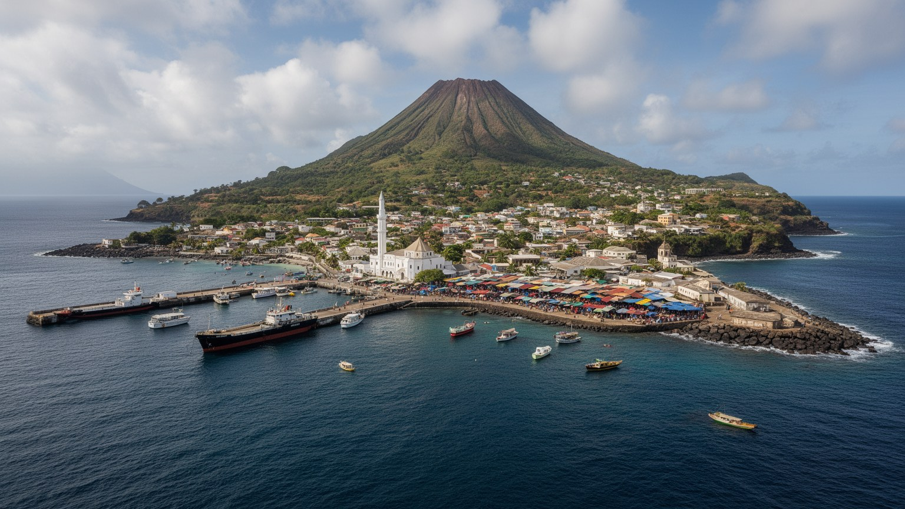
🇰🇲 コモロ / インド洋 / World City Atlas
カルタラ山の溶岩地形とインド洋の港に挟まれた小さな首都です。国家政治、金曜モスク、港湾、送金、島の市場、若者の仕事、気候リスクが近い距離で重なります。
都市の骨格
モロニはグランドコモロ島西岸の港町で、カルタラ山の斜面、黒い溶岩の海岸、政府機関、市場、モスク、空港へ向かう道路が小さな都市圏を形作ります。
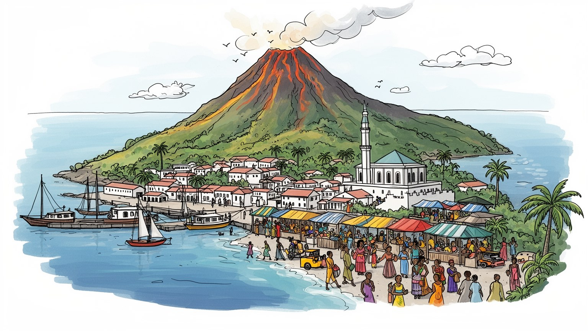
モロニはアフリカ大陸、マダガスカル、マヨット、アラブ世界を結ぶ海域の首都です。小国の政府、港、空港、外交機関が集まり、移民、海上交通、フランス領マヨットとの関係が都市の日常にも響いています。今も強く。
行政、港湾、小売、建設、教育、医療、観光、海外送金が雇用を支えます。市場の商い、乗合交通、港の荷役、路上販売、若者の出稼ぎ志向が家計を動かしています。ラジオとSNSも仕事探しを助け、買い物情報を広げます。
モロニではスンニ派イスラム、シコモリ語、アラビア語、フランス語、スワヒリ世界の記憶が重なります。金曜礼拝、結婚儀礼、家族の名誉、海を越えた親族関係が、旧市街と郊外の暮らしを結びます。濃く残ります。
観光客は旧市街、港、金曜モスク、カルタラ山を訪れますが、住民には水、電力、道路、物価、雇用、教育の課題が身近です。美しい海と火山の風景は、島の脆いインフラと隣り合っています。毎日すぐ近くにあります。
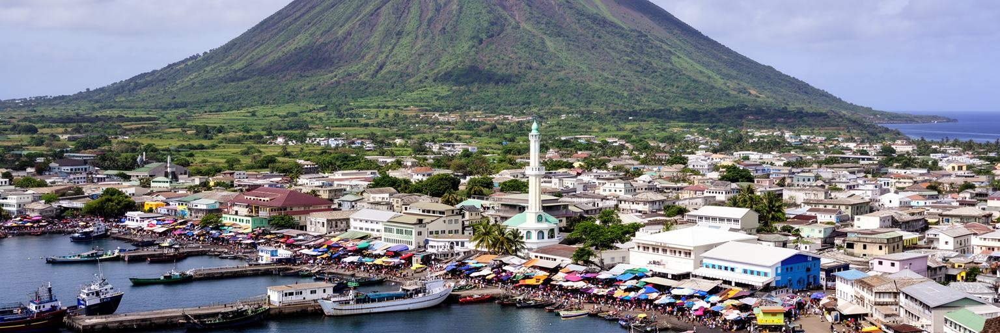
モロニを理解する入口は、首都である前に火山島の西岸都市であることです。街の背後にはカルタラ山が大きく立ち、斜面から海へ下る短い距離の中に住宅、官庁、市場、港、モスクが集まります。平野が広い都市ではないため、道路は地形に沿って曲がり、建物の密度は海岸と斜面の間で変わります。黒い溶岩の海岸は美しい景観であると同時に、港湾整備や浜辺の利用を制約します。火山灰、豪雨、排水、斜面の崩れ、海岸の浸食は、都市の成長を常に条件づけます。観光の写真では青い海と緑の山が前面に出ますが、住民の生活では水道、道路補修、排水路、坂道の移動が日々の問題になります。カルタラ山は信仰や景観の背景でもあり、噴火リスクを思い出させる存在でもあります。モロニの都市計画は、広い土地を自由に広げる発想ではなく、火山、海、港、集落の間で限られた空間をどう使うかという調整から始まります。斜面に家が増えるほど、雨水の流れ、廃棄物の処理、車が通れる道幅、避難のしやすさが課題になります。海岸へ向かう道は市場や港へ人を集めますが、災害時には混雑しやすい生活動線にもなります。地形を読むことは、景色を見ることではなく、都市がどこまで安全に広がれるかを読むことです。坂の上と港の近くでは、同じ首都でも水、風、交通、家賃の条件が違います。その差も重要です。
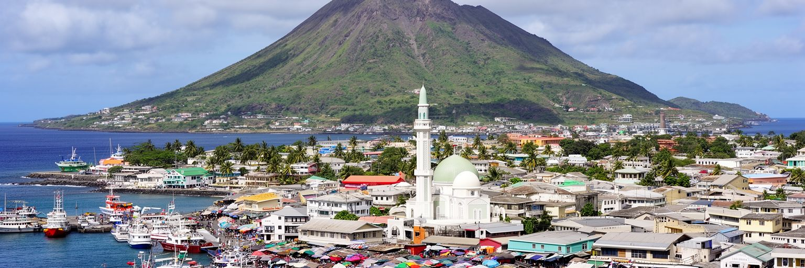
モロニはコモロ連合の首都として、大統領府、政府機関、議会、裁判、外交、報道、政党活動が集まる場所です。国土は小さく人口も限られますが、島ごとの自治、政権交代、クーデターの記憶、海外移民、マヨット問題、援助依存が政治を複雑にしています。首都の決定は、港の料金、道路工事、教育、医療、電力、水道、観光許可、治安の運用として住民へ届きます。大規模な官庁街が整然と広がる都市ではなく、政府機能は市場や住宅地と近く、政治は日常会話の距離にあります。行政能力が限られるほど、住民は親族、宗教組織、海外送金、地域のつながりにも頼ります。モロニを見ることは、小国が国際機関、近隣諸国、旧宗主国、ディアスポラと交渉しながら国家を維持する現場を見ることです。政治の安定は抽象的な制度だけでなく、港に物資が届き、学校が開き、病院が機能し、若者が将来を描けるかで測られます。政府の規模が小さいため、政策の失敗も成功も生活に早く現れます。停電や物価、道路の補修、選挙期の緊張は、家庭の会話や市場の空気を変えます。モロニの首都性は権力の大きさより、限られた資源をどう配分するかという近さにあります。島ごとの不満を調整し、国家としての一体感を保つ役割も、首都の公共空間に背負わされています。その合意作りが都市の信頼を強く左右します。
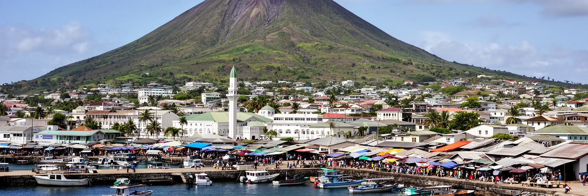
モロニの港は、島国の首都にとって単なる交通施設ではありません。食料、燃料、建材、日用品、援助物資、旅客の移動が海路に依存し、船便の遅れや燃料価格の変化は市場の値札へすぐに現れます。コモロはモザンビーク海峡の北側にあり、マダガスカル、東アフリカ沿岸、マヨット、レユニオン、アラブ世界へ開く位置にあります。歴史的にはスワヒリ世界、アラブ商人、フランス植民地支配、インド洋の移民が重なり、港は人と商品の記憶をためてきました。現在の港では、荷役、通関、倉庫、食堂、タクシー、小売、両替、家族の見送りが一つの経済圏を作ります。島内の農産物、香辛料、魚も市場を通じて都市へ入り、揚げ物や米料理の匂いが港前の食堂に広がります。海は美しい背景であると同時に、物価、雇用、外交、災害時の供給網を左右する基盤です。港の混雑や設備不足は、商人だけでなく家庭の食費にも影響します。輸入品に頼る生活では、遠い為替や海運の変化がすぐ家計に届きます。だから港の整備は経済政策であると同時に、食卓を守る生活政策でもあります。船を待つ時間、荷を運ぶ人、通関の手続き、港前の小さな食堂、夜の買い物まで含めて、海路は都市の日常を形作ります。船の汽笛や魚の匂いも、港町の時間を細かく知らせます。港が止まれば、首都の時計も家計も同時に遅れます。
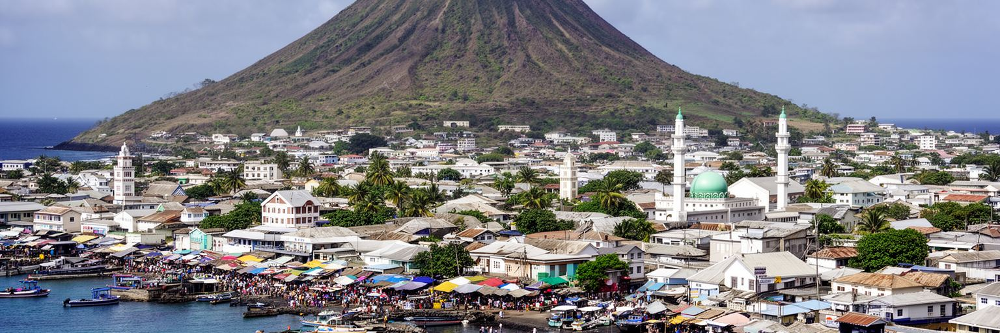
モロニの暮らしでは、スンニ派イスラムが時間、家族、商い、教育、礼儀を形作ります。金曜礼拝の日には人の流れが変わり、モスクの周辺では挨拶、相談、寄付、商談が交差します。旧市街の金曜モスクは象徴的な場所ですが、信仰は名所だけでなく、家庭の食卓、結婚式、葬儀、ラマダンの夜、子どもの学び、近所の助け合いに宿ります。宗教は島を越えた親族、商人、学者の移動とともに育った生活の制度でもあります。同時に、若者の就労、女性の教育、観光客の振る舞い、海外文化の流入をめぐって、信仰と現代生活の調整が続いています。ラジオの説教、携帯電話の連絡、SNSで共有される祝祭の写真も、遠くの親族の輪を広げます。住民にとっては、モスクや宗教指導者が情報、相談、慈善の基盤になることもあります。モロニの宗教生活は、建築の美しさよりも、人が互いを気にかける日常の約束として理解する必要があります。結婚式や葬儀では、親族と近所が費用や準備を分かち合い、音楽と料理で社会的な信用を確かめます。断食月の夜は市場や家庭の時間を変え、食と祈りが共同体を結び直します。信仰を生活のリズムとして見ると、都市の公共性がより具体的に見えます。礼拝の呼びかけは、観光の音風景ではなく、商いと休息の時刻を知らせる生活の合図として、夕暮れの街角に広がります。
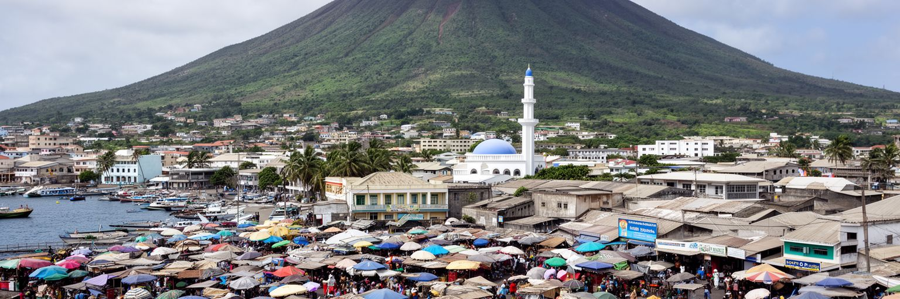
モロニの日常経済は、市場、露店、乗合交通、建設現場、港の周辺、官庁、学校、診療所の仕事で成り立ちます。大きな工場や金融街が雇用を吸収する都市ではないため、多くの家計は小売、家族労働、臨時の仕事、農村とのつながり、海外からの送金を組み合わせます。市場では米、魚、バナナ、香辛料、衣類、携帯電話用品、輸入品が並び、海路と為替の変化が価格に反映されます。女性の商いは家庭の支出を支える重要な力であり、若者は公務、観光、建設、海外移住の可能性を探します。収入が不安定な時ほど、親族や近所の貸し借り、宗教的な相互扶助が生活を支えます。一方で、物価上昇、電力の不安、交通費、学校費用、医療費は家計を圧迫します。市場の買い物は、魚の匂い、香辛料の色、値段を呼ぶ声、携帯送金の通知音まで含む都市の濃い感覚です。モロニの経済を読むには、限られた現金をどう回し、誰が無償の世話を担い、どの仕事が見えにくいのかを見る必要があります。店の棚に並ぶ商品は、港、親族の送金、近郊農村、輸入業者を通じて届きます。値段交渉は単なる商習慣ではなく、収入の少ない家庭が暮らしを守る技術です。小さな取引の積み重ねが、首都の日々の安定を支えています。誰が朝早く仕入れ、誰が子どもの世話をし、誰が信用で売るのかまで見ると、家計の都市が見えます。
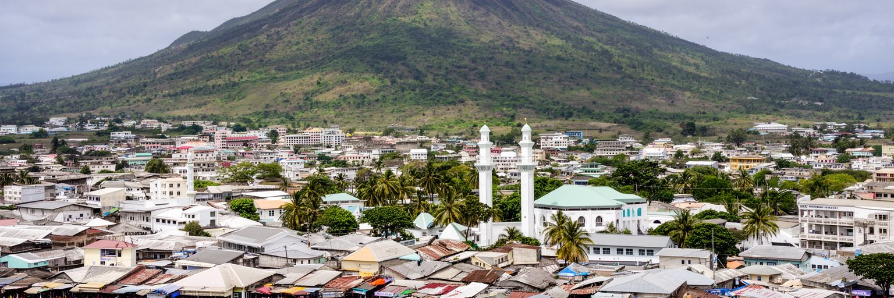
コモロの暮らしを語るとき、海外移民と送金は欠かせません。フランス、マヨット、レユニオン、マダガスカル、東アフリカ、湾岸方面へ移った家族との関係は、モロニの住宅建設、教育費、医療費、結婚式、商売の資金に深く関わります。送金は家計を支える一方、国内で安定した仕事を作る難しさを映します。若者にとって海外は希望であり、危険な移動や在留資格の不安も伴う選択です。マヨットをめぐる政治的緊張や移民管理は、遠い外交問題ではなく、親族の移動、医療、学校、仕事の機会に影響します。海外で働く人の成功は家族の誇りになりますが、残された家族の介護、子育て、孤独、期待の重さも生みます。都市の新しい家や店舗の背後には、国外で長時間働く人の労働がある場合も多いです。モロニは島の首都であると同時に、海を越えた家族ネットワークの結節点です。送金で支えられる都市を見ると、経済の数字だけでは分からない移動の痛みと連帯が見えてきます。海外にいる家族は、祝祭や葬儀にも費用と判断で関わります。帰省する人は新しい消費や考え方を持ち込み、残る人との間に期待と不公平感も生まれます。ディアスポラは都市を支える資源であると同時に、島で働く選択肢の少なさを映す鏡です。空港や港の再会の場面には、家族の喜びだけでなく、離れて暮らす年月の負担も重なっています。
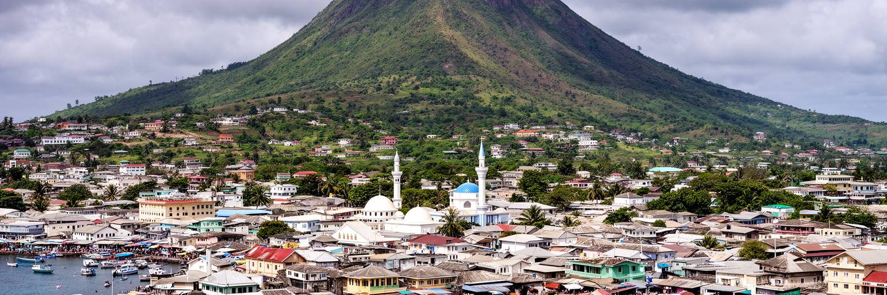
モロニの歴史は、アフリカ大陸、マダガスカル、アラブ世界、インド洋交易の交差点として積み重なりました。シコモリ語はスワヒリ語に近いバントゥー系の言語で、そこにアラビア語、フランス語、植民地期の行政、イスラム教育、海を越えた商業の記憶が重なります。旧市街の狭い道、モスク、石造りの家、港へ向かう通りには、島が外の世界とつながりながら自分の文化を作ってきた痕跡があります。歴史を多文化の美しい混合としてだけ語ると、植民地支配、階層、貧困、政治的不安定は見えにくくなります。モロニの文化は、伝統衣装や祭礼だけでなく、学校で使うフランス語、家庭で話す言葉、宗教教育、海外から戻る家族の習慣にも現れます。観光客が旧市街を歩くとき、壁や扉だけでなく、挨拶の仕方、海から来た商品、家族名、結婚儀礼にも注意を向けると、都市の厚みが見えます。モロニは小さな首都ですが、インド洋の長い移動史を日常の言葉と礼儀の中に残しています。独立後の政治不安や経済の停滞も、この歴史の一部として街に影を落とします。文化は過去の飾りではなく、困難の中で人が関係を保つ技術です。海から来たものを受け入れながら、島の共同体を守る姿勢がモロニの個性を作っています。言葉を切り替えながら暮らすこと自体が、海域の歴史を受け継ぐ日常の実践になっています。
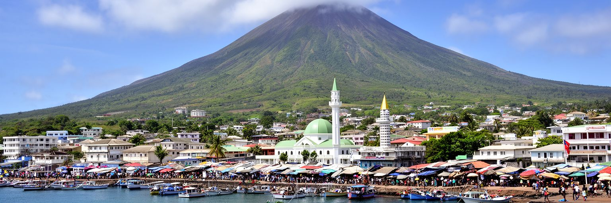
モロニ観光の中心は、旧市街、港、金曜モスク、海岸、近郊の村、カルタラ山への登山や自然体験です。大規模なリゾート都市ではないため、訪問者は首都の生活に近い距離で滞在します。市場の匂い、モスクの周辺、溶岩の海岸、港の人の流れ、山へ向かう道は、短い旅行でも島の社会を感じさせます。観光はホテル、ガイド、交通、飲食、手工芸に収入をもたらしますが、インフラが弱い都市では水、電力、廃棄物、道路、医療体制への負担も増えます。自然観光では火山の安全、天候、道案内、環境保全が重要です。文化観光では礼拝や住民のプライバシーへの配慮が欠かせません。観光収入が地域に残るには、地元のガイド、家族経営の宿、女性や若者の小規模事業、文化財の維持へお金が回る仕組みが必要です。モロニを訪れる価値は、豪華な設備よりも、火山島の首都で人がどう暮らし、祈り、商い、海と山に向き合うかを近くで学べる点にあります。観光が小規模だからこそ、案内の質や住民への配慮が印象を大きく左右します。写真を撮る前に挨拶し、礼拝の時間を避け、地元の店を使うことも都市への参加になります。モロニの旅は、消費より関係の作り方を学ぶ滞在です。ガイドの説明が歴史、信仰、自然、生活の課題を結べば、短い滞在も深い理解へ変わります。その理解が地域への敬意を生みます。
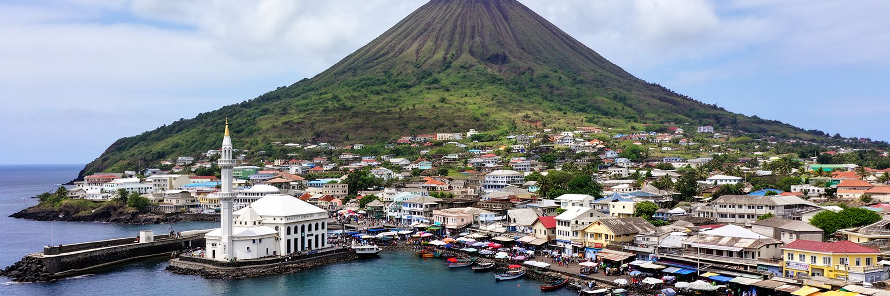
モロニは熱帯海洋性の気候で雨が多く、湿気、豪雨、サイクロンの影響、海岸浸食、火山リスクが都市基盤を試します。カルタラ山の斜面から短い距離で水が流れ、排水設備が弱い場所では道路や住宅に被害が出やすくなります。火山の噴火や灰は日常的な出来事ではありませんが、島の水源、農地、交通、健康に大きな影響を与える可能性があります。海岸では高潮や波浪、港湾施設の劣化、廃棄物の流出も問題になります。気候リスクは自然現象だけではなく、貧困、住宅の質、行政能力、情報伝達、医療体制と結びつきます。安全な住宅へ移れない人、修理費を出せない人、避難情報を得にくい人ほど被害を受けやすいです。気候適応には、排水路の整備、斜面管理、海岸保全、早期警戒、学校での防災教育、停電時の備えが必要です。雨音が強まる夜には、子どもや高齢者の移動、薬の保管、携帯電話の充電も生活の心配になります。ラジオの警報や近所の声かけは、公式情報が届きにくい場所で命綱になります。停電が重なれば、冷蔵、通信、診療、給水、商店の営業が同時に止まりやすくなります。小さな島国では、災害後に外部から物資を運ぶ港や空港の機能も重要です。気候への備えは、貧しい家庭ほど早く助けを受けられる仕組みと一緒に考える必要があります。雨の日の排水溝や避難路の状態が、首都の本当の強さを示します。備えは日常の管理です。
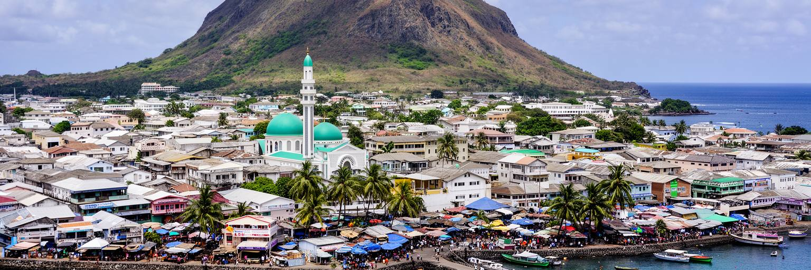
モロニには教育、行政、商業、医療、通信、交通の機能が集まるため、島の若者は仕事や学びを求めて首都へ向かいます。しかし経済規模は小さく、公的部門も民間部門も十分な雇用を作りにくいため、失業、低賃金、臨時労働、海外移住への期待が強くなります。学校を終えても技能を生かす場所が限られ、起業には資金、電力、通信、輸送、制度の壁があります。女性には教育機会が広がる一方、家事、育児、家族の期待、宗教的な規範との調整が続いています。住宅では、親族と同居する安心と過密の負担が同時にあります。水道、電力、医療、道路が不安定な時、若者の時間は移動や待機に奪われます。社会課題を個人の努力だけで語ると、島国の小さな市場、輸入依存、行政能力、気候リスクを見落とします。放課後のサッカー、携帯で聴く音楽、SNSの小商い、夜の友人との集まりは、若者が自分の居場所を作る手段です。学校の校庭や海辺の空き地では、子どもの遊びと大人の見守りが重なり、高齢者は親族の相談役にもなります。職業訓練、女性の起業支援、安定した電力、透明な行政手続きがなければ、才能は島外へ流れます。若者の将来不安は、首都の公共性そのものを試しています。小さな成功例を地域で増やし、学び直しと商いを結ぶことが、移住だけに頼らない未来を確かに身近に開きます。
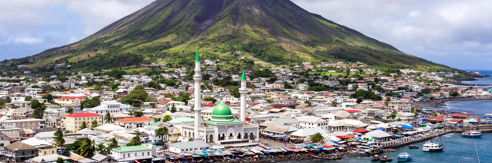
モロニは世界の大都市と比べれば小さいですが、島嶼国家の首都として読むと多くの論点が凝縮しています。火山島の限られた土地、海路に依存する物資、イスラムの生活リズム、海外送金、旧植民地との関係、マヨットをめぐる移動、若者の雇用、気候リスクが、同じ街路と市場に重なります。経済規模だけで都市を測ると、モロニの重要性は見えにくいです。しかし、小国がどのように国家を運営し、海を越えた家族関係で生活を支え、災害とインフラ不足に向き合うかを知るには、非常に重要な都市です。港では世界市場が価格になり、モスクでは共同体の約束が確認され、官庁では限られた予算の使い道が決められます。観光客が見る海と山の美しさの背後には、水、電力、雇用、移民、政治の重い課題があります。モロニを読むことは、巨大都市だけが世界を動かしているのではなく、小さな首都もまた海、家族、信仰、国家を結ぶ結節点であると理解することです。ここでは港の遅れが家計に響き、海外の親族の判断が住宅を建て、礼拝の時間が商いの流れを整えます。小ささは単純な弱さではなく、制度と生活が近い距離で反応する条件です。モロニは世界都市の別の尺度を教えてくれます。大都市の量ではなく、島の制約をどう支え合うかを見ることで、この首都の意味が立ち上がります。そこに学びがあります。